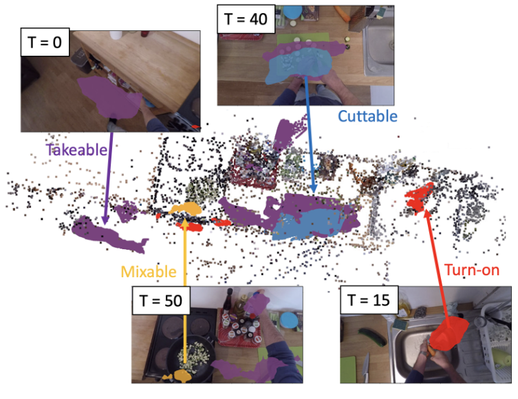
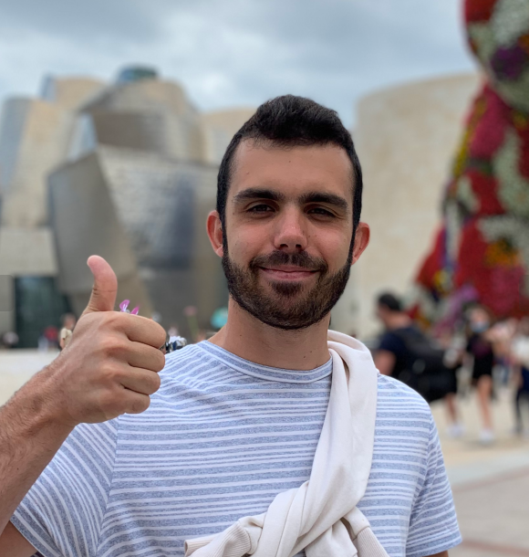
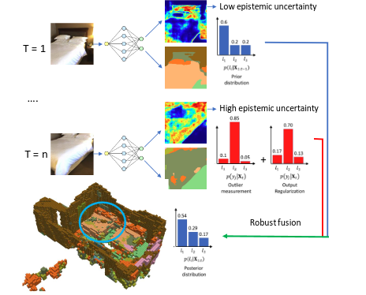
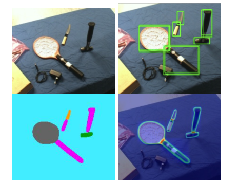
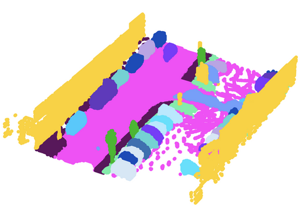
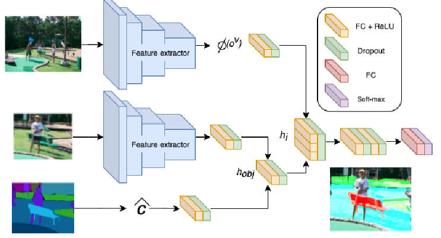
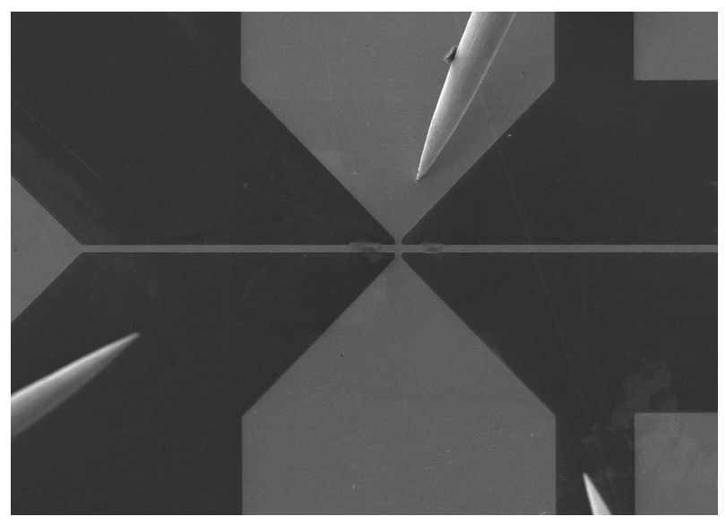

Multi-label affordance mapping from egocentric vision
Lorenzo Mur-Labadia, Ruben Martinez-Cantin and JJ.Guerrero

I am a PhD student in the field of computer vision and deep learning supervised by Rubén Martinez-Cantin and Josechu Guerrero. My research focus is on the Bayesian perception of affordances, which involves understanding how humans perceive and interact with objects in their environment based on their visual properties. By applying Bayesian modeling techniques to this problem, I aim to develop more robust and flexible computer vision systems that can accurately interpret and respond to complex visual information

Lorenzo Mur-Labadia, Ruben Martinez-Cantin and JJ.Guerrero

David Morilla, Lorenzo Mur-Labadia, Eduardo Montijano and Ruben Martinez-Cantin PDF

Lorenzo Mur-Labadia, Ruben Martinez-Cantin and JJ.Guerrero Campo PDF

Supervised by Abhinav Valada, Nikhil Gosala and Paulo Drews

Lorenzo Mur-Labadia, Ruben Martinez-Cantin PDF

Supervised by Soraya Sangiao and JM.de Teresa
You can contact me via email at lmur@unizar.es or see my latest works on Scholar